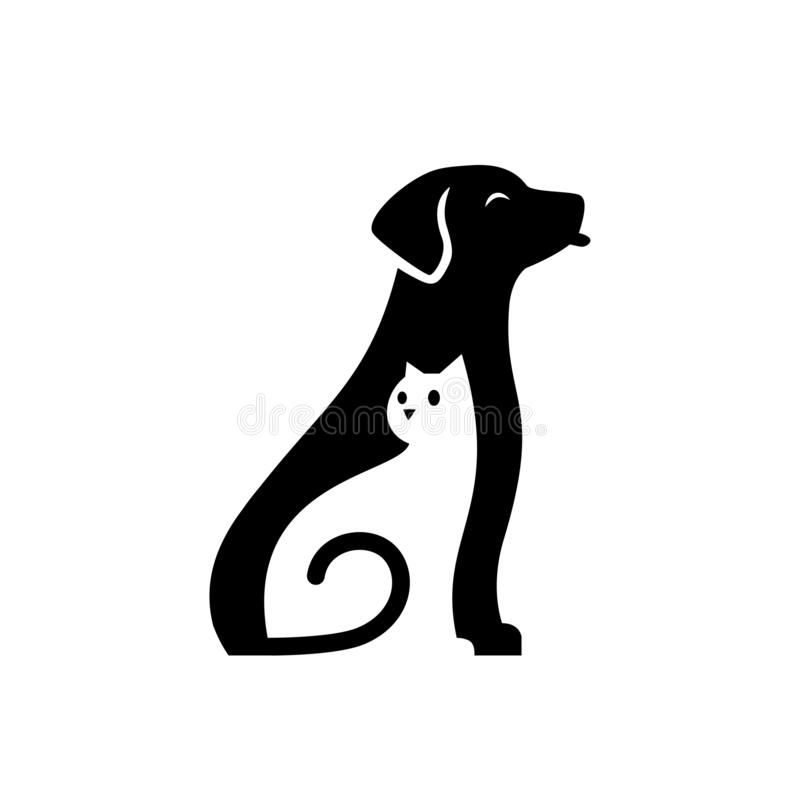
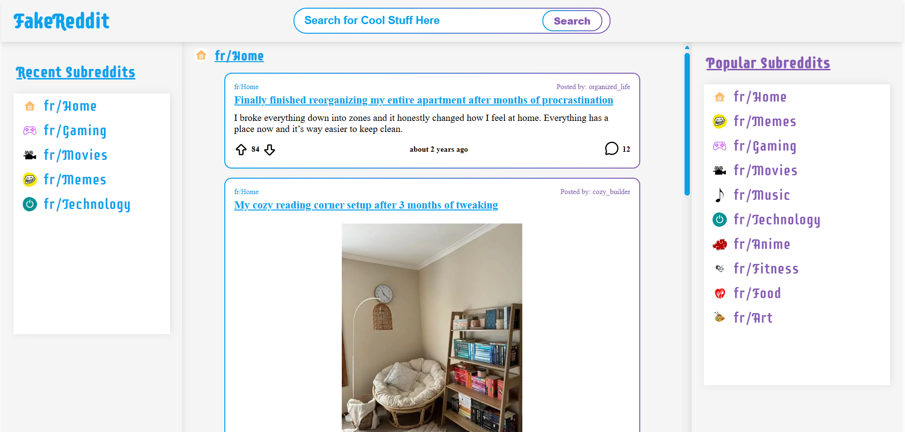

Colton Baldwin
Hello, I am a computer science graduate of Kennesaw State University. I have a passion for full-stack development, software engineering, and getting into app development as well.
I also enjoy being active such as soccer, hiking, or rock climbing. I would also say I really like cooking as well, still learning a lot in that field
Pet Profile Matching Web Application

Collaborated on a full-stack web application designed to find compatible adoptable pets through AI driven personal pet recommendations.
Users create accounts and then complete a questioner, which their results are then analyzed to produce compatible pet results.
The platform allows users to browse available animals, save favorites, and explore adoption options. Recommendations are powered by API-driven analysis of user preferences to improve match relevance.
Implemented RESTful APIs to manage user authentication, questionnaire data, and matchmaking logic between the frontend and backend.
This was made using the PERN stack:
- Postgres SQL
- Express.js
- React
- Node.js
Spotify Playlist Creator

A web application where users can login to their personal spotify accounts, search for songs, create and save custom playlist to their accounts
Implemented OAuth 2.0 (PKCE) authentication to securely authorize users with Spotify without exposing client secret
Built a dynamic search feature using the Spotify Web API to fetch and display real-time song data
Developed an interactive React UI allowing users to preview songs, add tracks to a custom playlist, and manage selections in real time.
Created a Node.js backend to handle token exchange, API requests, and secure communication between client and Spotify services.
Due to Spotify API restrictions, the app is limited to authorized users. A demo video is provided to showcase full functionality. A link is provided below to still visit the website
Link to website: Click Here
Reddit-Clone Web-Application

A full-featured Reddit-inspired web application built with React and Redux Toolkit. The application retrieves and displays Reddit-style post feeds, supports image and text posts, interactive upvoting/downvoting, expandable posts, and dynamic comment sections.
Developed a Reddit-inspired web application using React and Redux Toolkit, implementing subreddit feeds, interactive post voting, expandable posts, image posts, and comment sections.
Built and tested reusable React components using Vitest and React Testing Library, covering post rendering, user interactions, voting, image rendering, and comment functionality.
Implemented CI/CD with GitHub Actions to automatically run tests and production builds, and deployed the application to GitHub Pages.
A video demonstration has been added so you can see the application being explored and some of its functionality explored.
Link to website: Click Here
You can contact or find me for more information through the following:
- Phone Number: 229-834-4348
- Email: coltonbaldwin101@gmail.com
- LinkedIn: Visit my LinkedIn
- Github: Visit My Github